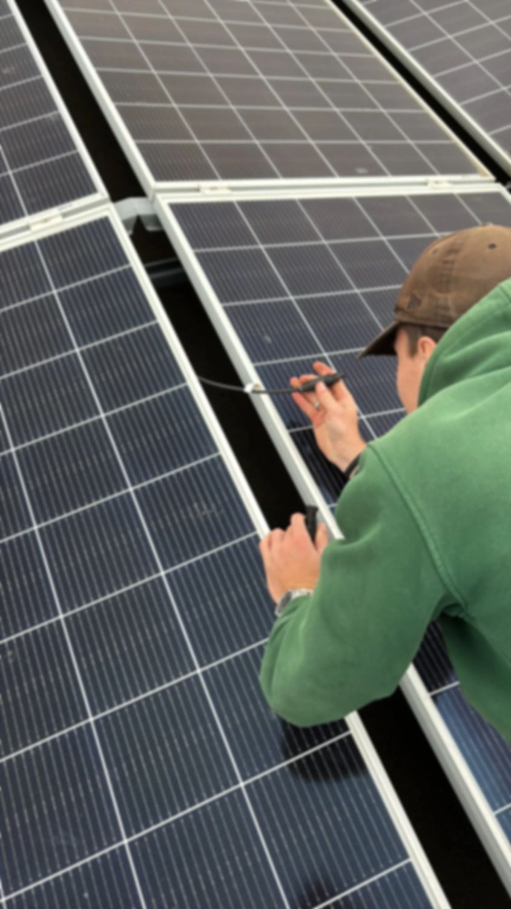

Het overkomt veel mensen: de omvormer geeft een foutmelding, de opbrengst valt terug, en het bedrijf dat de zonnepanelen plaatste, neemt niet meer op of is failliet. Gelukkig staat u niet met lege handen.
Stap 1: breng uw installatie in kaart
Zoek de gegevens van uw installatie op: de offerte of factuur, het merk en type van de panelen en de omvormer, en de datum van installatie. Maak een foto van het typeplaatje van de omvormer en van eventuele foutmeldingen op het display of in de app.
Stap 2: check de fabrieksgarantie
Ook als de installateur failliet is, kan de garantie van de fabrikant nog gelden. Omvormers en panelen hebben vaak een eigen fabrieksgarantie. Een nieuwe installateur kan namens u contact opnemen met de fabrikant. Bij oudere installaties is die garantie soms verlopen, of bestaat het merk niet meer. Dan kijken we naar een passend alternatief.
Stap 3: laat de installatie controleren
Veelvoorkomende problemen zijn een defecte omvormer, een losgeraakte of verbrande MC4-connector, beschadigde bekabeling of een kapotte optimizer. Een installateur meet het systeem door en vindt de oorzaak. Probeer zelf niets aan de bekabeling op het dak te doen: op de kabels tussen panelen en omvormer staat gelijkspanning.
Stap 4: kies een vaste onderhoudspartner
Wij nemen het onderhoud van installaties van andere bedrijven graag over. We beginnen met een inspectie, zodat we weten hoe uw systeem ervoor staat. Daarna kunt u kiezen voor losse service bij storingen, of voor een vast onderhoudscontract met een jaarlijkse controle. Zo weet u zeker dat er iemand is als er iets misgaat.
Moet de hele installatie vervangen worden?
Meestal niet. Zonnepanelen gaan lang mee; vaak is het de omvormer die na verloop van tijd vervangen moet worden. Soms is het wel verstandig om bij vervanging meteen te kijken naar een nieuwere omvormer die geschikt is voor een thuisbatterij, zeker met het einde van de salderingsregeling in 2027.
Hulp nodig?
Bekijk onze pagina over onderhoud en storingen, of stuur ons een foto van de foutmelding via WhatsApp. Vaak kunnen we dan al inschatten wat er aan de hand is.
Vragen over uw situatie? Wij komen gratis kijken.
Vraag gratis advies aan